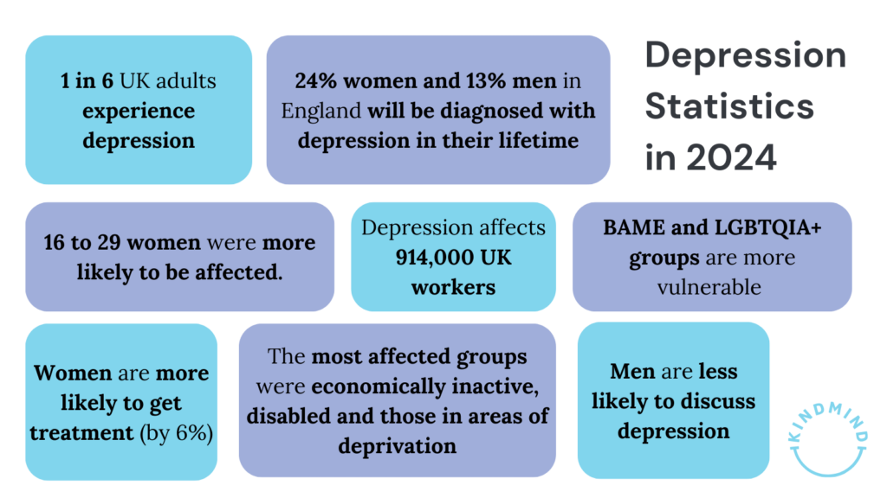
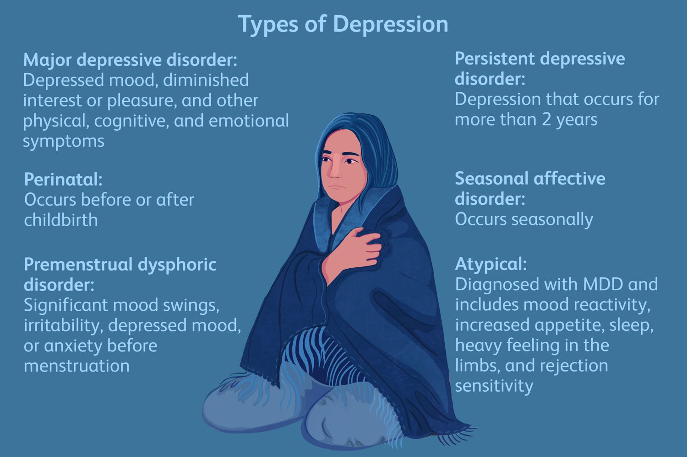
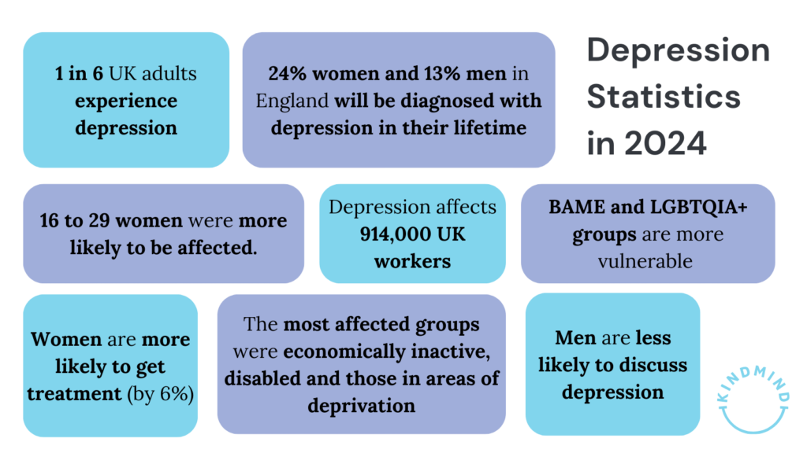
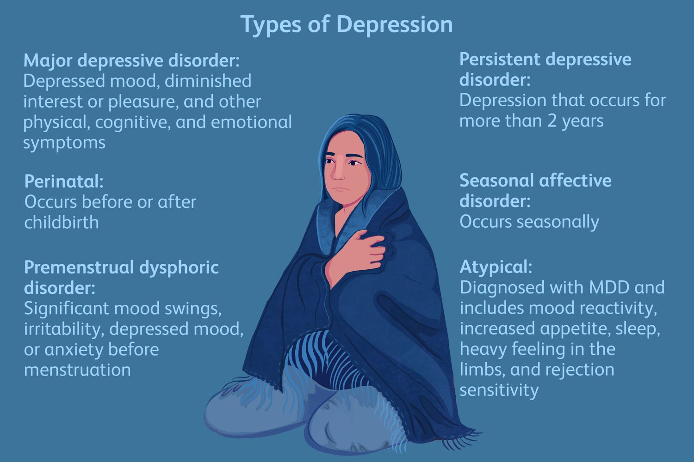

What is depression?
Depression is a mental health condition where a person feels sad, hopeless, or uninterested in things they used to enjoy.16 %of US teens (ages 12 to 17)—more than 4 million adolescents—had at least one major depressive episode.Depression is more common among young adults aged 18–25 years (17.2%, SE=0.78), followed closely by adolescents aged 12–17 years (16.9%, SE=0.84).
arrow_back
arrow_forward
What impact does depression have on young adults?
Depression can have a profound impact on the mental, emotional, physical, and social well-being of young adults.
- Depression often leads to negative self-talk and feelings of worthlessness or inadequacy. Young adults may
have distorted perceptions of themselves and struggle with low self-esteem.
- Young adults with depression often experience persistent feelings of sadness, hopelessness, or
emptiness
- Depression can manifest physically, with symptoms such as headaches, digestive issues, or unexplained aches
and pains. It can also weaken the immune system, making them more susceptible to illness.
- Young adults with depression may withdraw from social interactions, leading to feelings of loneliness and
isolation.
arrow_back
arrow_forward
How to cope with depression ?
You can cope with depression with a mix of self-care strategies, seeking support, and professional help if necessary.
- Talking to someone you trust, like a friend, family member, or mental health professional. Sharing your
feelings with others can provide you with emotional support and help you feel less alone.
- Mindfulness techniques, such as deep breathing, meditation, or yoga, can help calm the mind and reduce
stress. Incorporate relaxation practices into your daily routine to promote emotional well-being.
- If your depression persists or interferes with daily functioning, consider seeking help from a mental health
professional. Therapy, medication, or a combination of both may be recommended to manage symptoms effectively.
 


